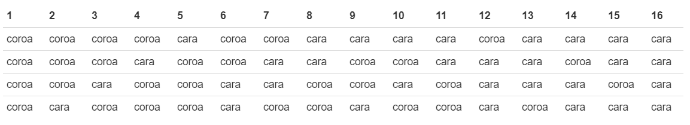

Distribuição de Probabilidade no R
Introduçao
O R inclui algumas operações com as distribuições de probabilidade. Pode-se observar que existe 4 operações básicas indicadas pela seguinte letras:
\(d\) calcula a densidade de probabilidade \(f(x)\) no ponto;
\(p\) calcula a função de probabilidade acumulada \(F(x)\) no ponto;
\(q\) calcula o quantil correspondente a uma dada probabilidade;
\(r\) gera uma amostra aleatória da distribuição.
Distribuição Binomial no R
Seja \(X\) o número de sucessos obtidos na realização de \(n\) ensaios de Bernoulli independentes.
Então,
\[P(X=x)={n \choose x}\,p^{x}\,(1-p)^{n-x},\quad \quad x=0,1,\ldots,n\] Exemplo 1
Uma moeda honesta é lançada quatro vezes. Assim, o espaço amostral (\(\Omega\)) associado a esse experimento aleatório pode ser apresentado pela tabela a seguir
knitr::include_graphics("img/tab1.png")
Pergunta:
Ao lançarmos uma moeda honesta quatro vezes, qual a probabilidade de ocorrer cara exatamente duas vezes? Ou, qual a probabilidade de ocorrer no máximo três caras nos quatro lançamentos da moeda ?
Primeiramente, vamos construir uma tabela de frequências com o número de caras X eventos de \(\Omega\).
knitr::include_graphics("img/tab2.png")
Observa-s que a tabela de frequências nos informa as respectivas probabilidades. No R, podemos construir o gráfico Probabilidade x Número de Caras da seguinte maneira:
moeda <- data.frame('cara'=
rep(c('0',"1","2","3","4"),
c(1, 4, 6, 4, 1)))require(ggplot2)ggplot(moeda, aes(x = cara, y=..count../sum(..count..), fill = cara)) +
geom_bar(width=0.1) +
labs(title = "Lançamento de uma moeda quatro vezes",
x = "Número de caras",
y = "Probabilidade",
fill='Número de caras')Pode se notar que a medida que a quantidade de lançamentos de uma moeda cresce, torna-se inviável calcular as probabilidades diretamente do espaço amostral, por meio de uma tabela de frequências. Para resolver esse problema pode-se utilizar o conceito de variável aleatória. Neste sentido, vamos estudar no R, a variável aleatória que segue distribuição binomial e resolver esse e outros problemas por meio desse modelo probabilístico.
- Ocorrer exatamente 2 caras em 4 lançamentos de uma moeda.
dbinom(x = 2, #Calcula a probabilidade de P(X=x)
size = 4, #Quantidade total de lançamentos
prob = 0.5, #Probabilidade inicial de ocorrer o sucesso
log = FALSE)
# [1] 0.375- Ocorrer no máximo 3 caras em 4 lançamentos de uma moeda.
pbinom(q = 3, #Quantidade de caras
size = 4, #Quantidade total de lançamentos
prob = 0.5, #Probabilidade lançar uma moeda uma única vez e ocorrer cara
lower.tail = TRUE #P[X <= x]
)
# [1] 0.9375- Podemos utilizar a função plot para construir o gráficos de Probabilidades x Valores observados
caras <- 0:4
probabilidade <- dbinom(x = caras, # Quantidade de sucessos
size = 4, # Quantidade de lançamentos
prob = 0.5) # Probabilidade de sucesso
probabilidade
# [1] 0.0625 0.2500 0.3750 0.2500 0.0625plot(caras, probabilidade,
xlab = "Número de Caras",
ylab = "Probabilidade",
type ='h', # Desenha uma linha vertical
col = 'red', # Cor da linha
lwd=3) # Espessura da linha/pontoExemplo 2
Suponha que numa linha de produção a probabilidade de se obter uma peça defeituosa é \(0,5\). Seleciona-se uma amostra de 10 peças para serem inspecionadas. Suponha que \(X\) é o número de peças defeituosa produzidas em único dia. Qual é a probabilidade de um remessa com 10 peças conter pelo menos quatro peças defeituosa?
Solução
Observa-se que \(X =\) Número de peças defeituosa produzidas numa remessa com 10 peças.
Então,
\[P[X \geq 4] = 1 - P[X < 4] = 1 - P[X \leq 3]\]
No R, temos que
pbinom(q = 3, #Quantidade de peças defeituosas
size = 10, #Quantidade total de peças
prob = 0.5, #Probabilidade de sucesso (peça defeituosa)
lower.tail = FALSE #P[X > x]
)
# [1] 0.828125Exercício no R
Considere nascimentos de 4 filhotes de coelhos de uma determinada raça. Nesta raça há um distúrbio genético e a probabilidade de nascer fêmea é 5/8. Sendo \(X\) a ocorrência de fêmeas, determine:
Construa um gráfico de probabilidades x valores observados de \(X\)
Qual a probabilidade de nascer pelo menos três fêmeas

Este conteúdo está disponível por meio da Licença Creative Commons 4.0